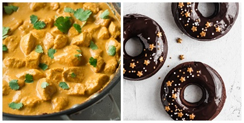

Welcome to the 'Favorite Things' section.
There are so many traits and characteristics about me that I would like to share with you fellow reader, but I will only provide a scope of my interests.
I will guide you through the path of my music taste, dive into my favorite movies and tv shows
and show you some of the delicious meals I truly enjoy. And, last but not least,
I will introduce you to my favorite books.
I am pretty sure all of you will agree that a world without music is unimaginable. Music brings joy to our ears, creates feelings we never thought we had, and simply makes our lives more meaningful. We all may adore different types of music, but music speaks universally the same to any soul.
There are multiple genres I enjoy listening to, such as indie rock, french music and some oldies, but I especially love classical music, the music without words. Listening to the violin strings of Bach or Vivaldi, the piano sonatas from Mozart or Beethoven and many other remarkable pieces from incredible artists is truly astonishing. Classical music is well known for stimulating the brain cells and making you even more productable. So, tunning to 'that' musical piece, whilst taking a sip of your coffee or tea, and working through that difficult daily task is truly a blessing. I wouldn't go any further into the world of classical music, but I sincerely recommend this music genre to anyone, it brings calmness and tenderness to the mind. Down below is my favorite musical piece.
Though shocking, I have to be honest I don't watch that many movies, but I am into tv shows. I admire movie classics and movies that cover deep topics. Even though the movies are adaption of series of books, the Harry Potter movies have a special place in my heart. The movies really made my childhood magical. I also like watching documentary series, especially those who cover topics from science and history. But overall, I would enjoy any show that is either highly informative or brings a smile to my face. Also, here is a link to a webpage displaying some of the most popular tv shows of 2021.
Food, don't we all just love food! Our world consists of so many nations with their own traditions, and also dishes. The well known and well liked Italian food, the spicy Mexican food, the famous Chinese food and many more. There are plenty of meals I like, but I will only cover my favorite lunch meal and favorite dessert.
First, I will give some details around my favorite lunch meal, which is chicken curry. Chicken curry is common to several countries including India, countries in Asia and the Caribbean. This dish dates back to the early 1800s. A British sea captain stationed in Bengal, India, shared the recipe for this dish with some friends at the major shipping port in Savannah, Georgia, which is how the recipe got popular around the world. Curry powder, and the use of the word curry, are Western inventions and do not reflect any specific Indian food. A similar mixture of spices used in India is called garam masala, but the blend is proprietary and different all over the country. Here is a link if you are interested in the recipe.
Now, when it comes to desserts, I have to admit I am a big fan of sweet things. It is hard for me to pick that one favorite dessert, but for the sake of this post I will. The first place goes to donuts! They come in different sizes and shapes, with colorful topings and crunchy sprinkles. My favorite toping is chocolate cream with biscuits. This easy recipe shows how you can make donuts at home.
Sometimes we all need an escape from reality. Books provide that for us. They takes in another world, make us question many things, but books also provide so many answers. I tend to read books that question reality, analize human thinking, imagination and moral behavior. I also like scientifical books that spread our way of percepting our home, our universe and also show how we humans are capable of doing so much in this world of ours. My favorite books are 'The Whisperer' by Donato Carrisi and 'The Stranger' by Albert Camus. Here is a link to an online library for you book lovers.